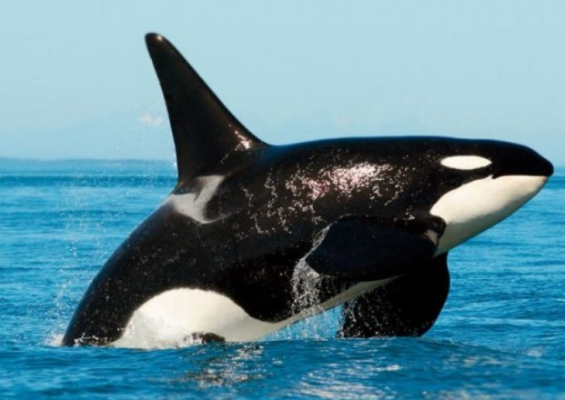

A Orca, pelo contrário do que muitos pensam, é um golfinho, e não uma baleia.
É um superpredador versátil, que inclui na sua dieta presas como peixes, moluscos, aves, tartarugas, focas, tubarões e animais de tamanho maior quando caçam em grupo, como por exemplo baleias.
 Bubalus é um gênero da família Bovidae, sub-família Bovinae, que foi amplamente distribuído na Eurásia no Pleistoceno. O gênero Bubalus inclui quatro espécies: Bubalus depressicornis ou Anoa, que vive apenas na Indonésia, com 46 cromossomos; Bubalus mindorensis e etc.
Bubalus é um gênero da família Bovidae, sub-família Bovinae, que foi amplamente distribuído na Eurásia no Pleistoceno. O gênero Bubalus inclui quatro espécies: Bubalus depressicornis ou Anoa, que vive apenas na Indonésia, com 46 cromossomos; Bubalus mindorensis e etc.
 O cavalo é uma das duas subespécies existentes de Equus ferus. É um mamífero perissodáctilo pertencente à família taxonômica Equidae.
O cavalo evoluiu há entre 45 milhões a 55 milhões de anos, desde uma pequena criatura com vários dedos, até o animal grande e com um único dedo de hoje.
O cavalo é uma das duas subespécies existentes de Equus ferus. É um mamífero perissodáctilo pertencente à família taxonômica Equidae.
O cavalo evoluiu há entre 45 milhões a 55 milhões de anos, desde uma pequena criatura com vários dedos, até o animal grande e com um único dedo de hoje.
 Coiote, às vezes é chamado de chacal americano por zoólogos, é um mamífero, membro da família Canidae e do gênero Canis. Os coiotes são encontrados apenas na América do Norte e Central. Geralmente vivem sós, mas podem se organizar em matilhas ocasionalmente. Coiotes vivem em média 6 anos.
Coiote, às vezes é chamado de chacal americano por zoólogos, é um mamífero, membro da família Canidae e do gênero Canis. Os coiotes são encontrados apenas na América do Norte e Central. Geralmente vivem sós, mas podem se organizar em matilhas ocasionalmente. Coiotes vivem em média 6 anos.
 Jacarés, são crocodilianos da família Alligatoridae, semelhantes aos crocodilos, dos quais se distinguem pela cabeça mais curta e larga,
pela presença de membranas interdigitais nos polegares das patas traseiras e, com relação à dentição onde o quarto dente canino da mandíbula inferior encaixa em um furo da mandíbula superior.
Jacarés, são crocodilianos da família Alligatoridae, semelhantes aos crocodilos, dos quais se distinguem pela cabeça mais curta e larga,
pela presença de membranas interdigitais nos polegares das patas traseiras e, com relação à dentição onde o quarto dente canino da mandíbula inferior encaixa em um furo da mandíbula superior.
 Os lagartos, como os demais répteis, são animais que apresentam corpo coberto por escamas, 4 membros e cauda. Eles fazem parte da ordem dos Escamados juntamente com as serpentes. São ovíparos e alguns são onívoros, como o Teiú.
Os lagartos, como os demais répteis, são animais que apresentam corpo coberto por escamas, 4 membros e cauda. Eles fazem parte da ordem dos Escamados juntamente com as serpentes. São ovíparos e alguns são onívoros, como o Teiú.
{kind=link}